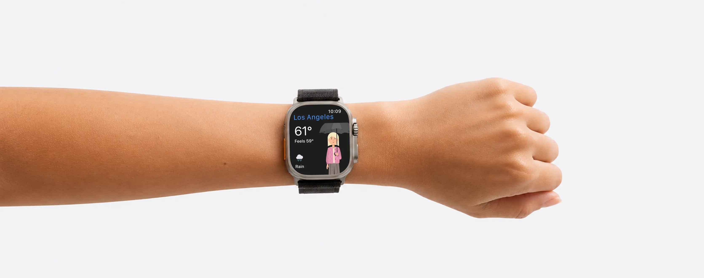

Co si dnes obléct?
Každé ráno se podíváš na počasí. Vidíš 12 °C a ikonu slunce za mrakem, a pořád nevíš, jestli to znamená kraťasy, lehkou bundu, zimní bundu nebo jen vysoké boty.

12°Weather Fit to vyřeší za tebe. Přečte předpověď, zná tvůj šatník a ukáže ti, co si obléct.
Obleč se ve třech krocích
-
Vytvoř si postavu
Vyber pohlaví, odstín pleti, účes, barvu vlasů, obočí, brýle a vousy.
-
Nastav si šatník
Přidej oblečení, které máš, a dej aplikaci vědět, co nosíš nejradši. Nikdy ti nenabídne nic, co nemáš.
-
Zjisti, co si obléct
Tvoje postava se oblékne podle předpovědi, a to na každou část dne.
Doporučení oblečení podle počasí
Tvoje postava oblečená podle předpovědi
Každé ráno má tvoje postava na sobě to, co odpovídá dnešnímu počasí: kraťasy, když se oteplí, zimní bundu, když se ochladí, sluneční brýle na jasná odpoledne a deštník, ještě než začne pršet. Oblečení se mění ráno, odpoledne, večer i v noci.
Nosí jen to, co opravdu máš
Přidej si oblečení podle kategorií: horní díly, spodní díly, bundy, obuv a doplňky. Nastav si, jestli se raději oblékáš lehčeji, nebo tepleji. Vypni věci, které nikdy nenosíš. Aplikace ti nabídne jen to, co si opravdu oblékneš.
Stejná předpověď jako v aplikaci Počasí na tvém iPhonu
Weather Fit využívá data z Apple Weather. Předpověď na dnes, zítra i dalších 10 dní, k tomu srážky po minutách, UV index, vítr, vlhkost, kvalita vzduchu, fáze Měsíce a východ a západ slunce. A navíc výstrahy a upozornění, když hrozí nebezpečné počasí.
Počasí všude, kam vyrazíš
Ulož si neomezený počet míst. Tvoje poloha se aktualizuje sama. Každé místo má vlastní krajinu: město, hory, pláž nebo předměstí. Obloha mění barvu podle denní doby.
Zjisti, jestli potřebuješ bundu. Bez sahání po telefonu
Aplikace Weather Fit pro Apple Watch ukazuje tvou oblečenou postavu, aktuální teplotu, pocitovou teplotu a předpověď srážek. Přidej si komplikaci na ciferník a ranní kontrolu počasí máš vyřízenou.

Řekne ti to dřív, než se zeptáš
Dva přehledy denně v časech, které si nastavíš, a v každém je tvoje postava už oblečená podle předpovědi. K tomu dvě připomenutí, která se ozvou, jen když to počasí opravdu vyžaduje.
- Ranní přehled: dnešní nejvyšší a nejnižší teplota, jak se počasí během dne vyvíjí a co si vzít na sebe.
- Večerní přehled: totéž pro zítřek, ať máš jasno už večer.
- Připomenutí deštníku: jen ve dnech, kdy má pršet, a dozvíš se i kdy.
- Připomenutí opalovacího krému: jen když má UV index překročit hodnotu, kterou si nastavíš.
Otázky a odpovědi
-
Co si dnes obléct?
Otevři Weather Fit a na první pohled uvidíš, co si dnes vzít na sebe. Tvoje postava má na sobě skutečné oblečení z tvého šatníku, vybrané podle aktuální předpovědi. Žádné luštění teplot, žádné hádání. Stačí se podívat, co má postava na sobě, a můžeš vyrazit.
-
Co si vzít na sebe podle počasí?
Weather Fit načte dnešní předpověď a oblékne tvou postavu do věcí, které opravdu máš. Outfit uvidíš ještě předtím, než vyjdeš z domu, a během dne se mění podle toho, jak se vyvíjí počasí.
-
Jaké oblečení se dnes hodí?
Weather Fit vybere správné vrstvy na celý den: tričko nebo svetr, kraťasy nebo kalhoty, bundu nebo nic navrch. Přizpůsobí je tomu, jestli se raději oblékáš lehčeji, nebo tepleji, takže doporučení sedí přesně tobě. Všechno, co nabídne, pochází z oblečení, které už máš.
-
Jak se obléct na dnešní počasí?
Weather Fit spojí dnešní předpověď s tvým šatníkem a s tím, jak teple se chceš oblékat, což si nastavíš podle sebe. Když ti bývá horko, nabídne lehčí vrstvy; když ti bývá zima, přidá teplejší vrstvy dřív. Tvoje postava nosí jen věci, které opravdu máš, žádné obecné rady.
-
Můžu si dnes vzít kraťasy?
Otevři Weather Fit a tvoje postava ti to řekne. Aplikace zjistí dnešní teplotu, zohlední, jestli ti spíš bývá zima, nebo horko, a ukáže ti, jestli jsou kraťasy dobrá volba, nebo jestli budou lepší kalhoty. Zvládne i zítřek a dalších 10 dní, takže už večer nemusíš nic hádat.
-
Budu dnes potřebovat bundu?
Weather Fit ukáže tvou postavu oblečenou podle dnešního počasí. Pokud je bunda potřeba, postava ji má na sobě. Pokud ne, tak ne. Žádné počítání, žádné pochybnosti.
-
Můžu si dnes vzít šaty?
Weather Fit zváží teplotu, vítr i déšť a řekne ti, jestli je dnes den na šaty a jestli si přes ně vzít ještě něco navíc. Přidej si do šatníku svoje šaty a sukně a postava si je vezme pokaždé, když to počasí dovolí.
-
Je Weather Fit zdarma?
Ano. Základní aplikace je zdarma a bez časového omezení: předpovědi počasí, doporučení oblečení, tvoje postava a jeden widget na plochu. Premium odemkne další widgety, krajiny, každodenní oznámení o počasí, aplikaci pro Apple Watch a neomezený počet položek v šatníku.